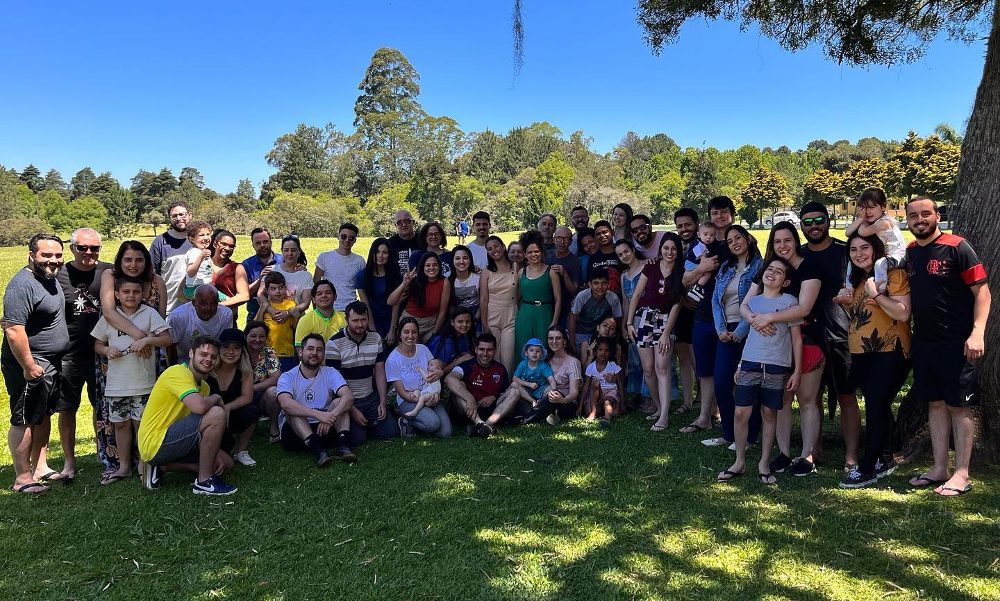

Fale conosco
Nos acompanhe nas redes
Faça-nos uma visita
Faculdade Teológica Betânia.
Av. Iguaçu 1700, 3° andar. Água verde - Curitiba-PR
Fundada em fevereiro de 2022 pelo Pastor Luiz Henrique Neves, busca desde o seu princípio ser uma igreja histórica, bíblica, com princípios reformados, confessional (Confissão de Fé Batista de 1689), contemporânea, missionária e comprometida com ensino e discipulado bíblico.



Faculdade Teológica Betânia.
Av. Iguaçu 1700, 3° andar. Água verde - Curitiba-PR